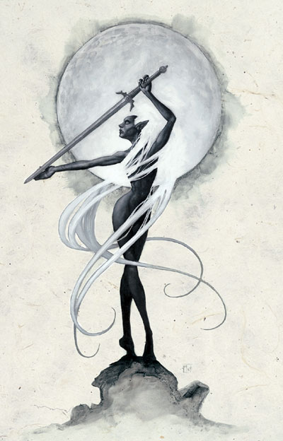
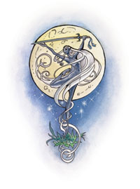

伊莉丝翠 Eilistraee

黑暗精灵神系 弱等神力
别称：幽暗少女 The Dark Maiden，舞蹈女士 Lady of the Dance
圣徽：手执银剑，在满月下起舞的裸体黑暗精灵女性

居住界域：阿泛多国度 Arvandor（精灵众神国度），与深坑魔网 Demonweb Pits
阵营：混乱善良 CG
神职：歌声 song，美丽 beauty，舞蹈 dance，剑术 swordwork，狩猎 hunting，月光 moonlight
信徒：善良阵营的黑暗精灵，猎人，地表精灵
牧师阵营：中立善良 NG，混乱善良 CG，混乱中立 CN
神域：混乱 Chaos，善良 Good，黑暗精灵 Drow，精灵 Elf，月亮 Moon，魅惑 Charm，传送门 Portal
喜好武器：月之剑 The Moonsword（重剑 bastard sword）
伊莉丝翠是一位内心充满了忧郁与哀伤的女神，她除了守护所有善良的黑暗精灵之外，也保护着那些盼望能重返地表世界和平生活的黑暗精灵。大多数邪恶黑暗精灵的心中都燃烧着针对这位善良女神的怒火，然而，对于那些努力逃出蜘蛛神后罗网的黑暗精灵而言，她却是令人欣喜的曙光。伊莉丝翠生性爱好美利与和平，但对于那些试图伤害自己信徒的恶徒也不绝吝于反击。她的外貌是一位肌肤光滑柔嫩的裸体高大黑暗精灵，蓄着一头直到脚踝的银光流泄长发。
很少有地表 世界的居民知道并且明了伊莉丝翠教会的存在与教义。许多地表世界的非精灵种族都不愿相信有关任何「重返地表的善良黑暗精灵」的传闻，将这些传闻驳为道听涂 说，或视为邪恶黑暗精灵所编造的谣言－只因他们不知道有这么一位女神在暗中看护这些独特的子民。然而，大多数的精灵虽然知道谣言背后的真相，却都蓄意忽视这些亲族的存在不愿多谈－它们都无法忘怀那段古老的历史：惨烈的皇冠战争（Crown War，历时数千年的精灵内战）正是由恣意沉溺于邪恶的古代黑暗精灵所挑起的。职是之故，只有那些与幽暗少女拥有相似理念以及活动区域的团体会认同这些信徒。值得一提的是，近年来竖琴手同盟（the Harpers）已开始暗中支持幽暗少女教会的发展，助其将信念推广到费伦大陆的所有角落。
幽 案少女的牧师在每天晚上月亮升起之后，唱歌（假如情况许可）祈祷以获得神术。教会内有数种不同的仪式－狩猎与随之而来的盛宴、舞蹈（穿着的衣物尽可能越少 越好）、以及「歌唱之环」（Circle Song）。信徒们偏好在沐浴于月光下的林间空地排成「歌唱之环」，在仪式中围著作成一圈并轮流下场起舞（每位信徒都要带完一首曲子）。此外，伊莉丝翠的 信徒也会在一天结束之后的晚祷中向女神倾诉这一整天的心情与感想（由于涉及个人隐私，因此他们通常是私下无声的祷告）。幽暗少女也要求她的牧师必须（在财力许可时）付钱给他们碰上的乐手与吟游诗人，请对方高歌一曲；一般的信徒便无强制要求此点，但也被鼓励这么作。
伊莉丝翠的教会也遵行几项 特殊的祭仪。「剑之舞」（the Sword Dance）这种仪式是将自己的一些血洒在剑上，请幽暗少女眷顾该武器，因而在往后的三个月内都不会断折或锈蚀。「崇高狩猎」（the High Hunt）每一季至少举行一次，是由牧师带领信徒，在夜间追猎一只危险的野兽或怪物。在教会的传统中，一般信徒允许携带任何有锋刃的武器与穿戴护甲，但牧 师们就必须一丝不挂，且只能随身携带一把剑。如果成功杀死目标，所有参与者便会齐聚高声祈祷，然后排成「歌唱之环」赞颂女神。「奔驰」（Run）则是伊莉丝翠牧师特有的仪式。在仪式中非黑暗精灵的牧师会用天然的染料或油脂涂黑自己的身体，且所有牧师也都会用特殊的树叶与浆果将自己的头发染成发亮的银色，然 后在地表世界中四处漫游，凭借着自己的音乐技巧、仁慈行为、以及自卫用的剑技（避免其它陌生人一见到她们就立刻展开攻击）闯荡。她们会造访其它陌生的地区，寻找隐密的精灵社群，为亲族带去各种游戏与救助。她们也努力地学习新的歌曲、音乐、以及剑术，而不是进行公开宣传教义这类暴露自己行踪的行为。
最 后，未死于战斗而得享天年的牧师也有专属的仪式－「最终之舞」（the Last Dance）。当其寿命届至时，年老的牧师会在夜间听见伊莉丝翠的歌声，召唤她们前往女神的国度。此时，该位牧师便会褪去自己所有衣物，在月光照耀的夜空下起舞－之后就会从人间消失。据那些曾经见过这种仪式的信徒说，当牧师开始起舞之后，女神就会随着歌声出现在空中，而该位年老牧师的舞姿将越来越显的轻盈 流畅，外表也逐渐恢复年轻。不久之后，牧师的头发将闪耀着与幽暗少女一样的光辉，然后慢慢的变为透明，最后只剩下闪耀的银光，以及两股声音－女神与她的牧师－一起合唱温婉忧伤的歌曲。
历史/与众神的关系 History/Relationship：
伊莉丝翠是科瑞隆�B拉瑞 辛（Corellon Larethian）与艾罗希涅（Araushnee，即来的罗丝）的女儿，也是维伦（Vhaeraun，黑暗精灵的窃盗之神）的妹妹，由于她无意间参与了艾罗希涅对精灵众神发动的叛乱，因此与母亲及兄长一起被放逐。虽然父亲赦免她的无心之过，但伊莉丝翠仍坚持自己亦须被放逐－因为她预见了这些黑暗精灵将 需要一座能指引他们重返善良的灯塔。她的盟友包括精灵众神、蜜丝特拉（Mystra）、苏伦（Selune）、以及所有幽暗地域善良种族的守护神�o；她的敌人则包括了所有幽暗地域的邪恶神�o－尤其是其它黑暗精灵众神。
教义 Dogma：
除了与邪恶战斗之外，应当保持仁慈善 良，将欢乐散布到各处。应当勤于学习并教导他人各种新的乐曲、舞蹈、以及流畅的剑术，努力促进各种族间的和谐共存。应当帮助外来者、庇护无家可归者、并救济身陷困境之人。以和善响应他人的无理冒犯，然而当碰上恶意伤人的邪恶时，便应尽可能迅速地以暴止暴，以避免对当制造更多伤害。对所有身陷苦难之中的黑暗 精灵伸出援手，并让他们听闻女神的福音：一个位于地表的新天地政等着你们，就在于那伟大的光耀之地（the Land of the Great Light）。和平地回到地表吧，再次沐浴在阳光之下，那儿有青葱的树木与盛开的花朵。
牧师与神殿 Clergy & Temples：
伊 莉丝翠的信徒们无时不刻都尽可能地鼓励黑暗精灵重返地表世界。她们努力地调和黑暗精灵与其它地表种族之间的关系，向其它种族证明黑暗精灵也是费伦善良生命 的一员。她们支持一切有关美丽、音乐、以及乐器制造技巧的发展，传播她们所发现的每一首歌曲；此外，她们也会协助猎人的狩猎行动，并仁慈地帮助所有身陷困境之人。幽暗少女的牧师都被要求能精通狩猎的技巧，并至少擅长一种女神喜好的乐器（号角、长笛、或者竖琴），她们也都是技巧出众的歌手或舞者。牧师们尽可 能地搜集一切歌曲与音乐的知识，并训练自己的用剑技巧以备不时之需。
伊莉丝翠的神殿通常都建造于幽深洞穴的入口处与阴暗的森林之中，让牧 师们能在夜晚时鼓起勇气走进林间沐浴在月光中（她的牧师几乎不会在地底世界建造神殿）。牧师们会寻找浑然天成、不须多加整顿的合适地点，于该处建造神殿。这些神殿与其它崇拜精灵众神的圣地十分类似，都有一块林间空地可供信徒齐聚舞蹈以及眺望明月，并还有一个躲避白天光量的隐蔽所（通常是一条通往幽暗地域的 隧道）。其它各个幽暗少女神殿彼此之间的共同特征还包括了浓密参天的树林、潺潺而过的溪流、一座锻造用的�F炉、以及一条适合铸剑（铁或其它金属）的矿脉。不过，幽暗少女最简陋的圣坛却只需要一块月光照拂的林间空地以供信徒们齐聚唱歌献舞即可。
幽暗少女的牧师皆蓄长发，通常视情况而穿着不同 的服饰。她们在教会的仪式中会尽可能地不着任何衣物，其它时候则各有不同－在狩猎时穿着轻便的皮甲，烹饪时穿着围裙、以及在战斗时（罕见地）穿上盔甲。她 \们偏好在平常时穿着银色的透明长袍。他们大多喜欢佩戴银制圣徽，通常是当成别在胸前，或是用细长的银制（或秘银制）项链挂在脖子上。
伊 莉丝翠的教会内部几乎没有正式神职阶级的划分，牧师们通常都是在费伦各地的深邃密林中分别组成小型的独立团体。然而，所有的牧师与信徒们都尊敬一位高阶牧 师：葵露�B维拉多伦（Qilue Veladorn），她身兼蜜丝特拉与伊莉丝翠两位神�o的选民，也是七姊妹中最年轻的一位。葵露并不直接号令指挥其它牧师，而是像一位睿智的长者一样给予 其它成员建言。
伊莉丝翠的化身 Eilistraee's Avatar：
伊莉丝翠的化身通常都是一位肌肤光滑柔嫩的9�崭呗闾迮�性黑暗精灵，蓄着一头直到脚踝的银光流曳长发。她的一头长发与周深闪烁的银色光辉将她全身都裹在柔和且变换不停的美丽帷幕之中。
--
资料来源：费伦大陆信仰与神系《Faiths & Pantheons》
译者：一凡